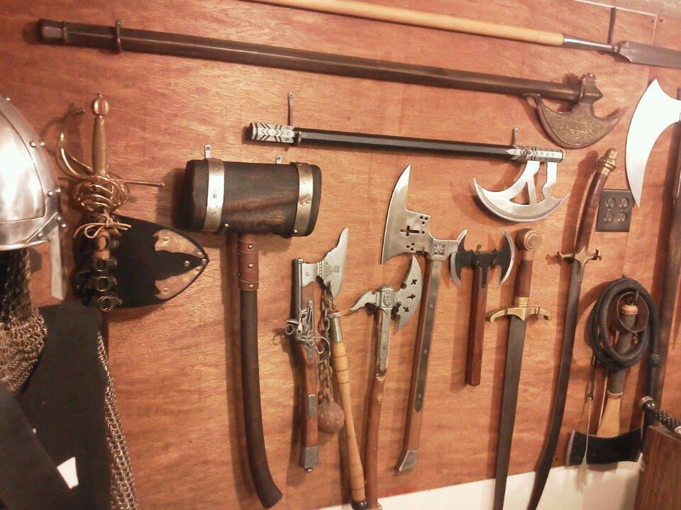

GM tips: Monster Traits part 1

Image by Scotimus licensed under Creative Commons
If you are like me, you start looking at a monster from the top of the stat block on down. You take note of the monster's ST and HP and work your way down the list from there. I'd like to suggest something new: Start with the traits section.
Why the traits section? Simply put, those traits are the biggest thing that makes a monster unique. More than once after getting half way (or all the way) through a fight I realize that a monster should have behaved differently due to a trait. Let's take a moment to look at a few major traits it's easy to overlook that completely change the threat level and behavior of a monster.
360° Vision: For a monster that might get surrounded, this is key to avoiding getting killed from behind, as there are no longer rear hexes (an important tactic for mitigating active defenses).
Altered Time Rate: The main thing to remember about this one is that with it, taking an all out attack during your first turn doesn't actually make you defenseless (since you'll get another turn before anyone else, during which you can defend or even all-out defend) with one big exception: If your all out attack triggers a wait, you'd be in trouble during that one response. This is a neat trick to reducing the utility of great haste as well. We only have this on one critter in Monsters: The Watcher at the End of Time.
Compartmentalized Mind: The only canonical example of this is the Mindwarper who's a beast to handle for a whole host of reasons. If you apply this to a spell caster like a lich or a dragon, you end up with something that can cast 2 spells a turn, or a spell and (in the case of a dragon) an array of physical attacks.
Damage Resistance: If you are making up a monster, be aware that many professions (including big damage dealers like scouts and swashbucklers) have a hard time bringing more than 6 damage at a time. Don't forget that for many monsters (dragons are a notable exception) it's possible to target locations like the eyes or chinks in the armor to avoid DR.
Dark Vision/Infravision: Most delver teams I've seen in the field bring continual light, and cast it at the entrance to the dungeon and resolve darkness penalties that way. If you can take that away (by dispel magic, a no mana/sanctity zone or similar), dark vision can make a monster pretty terrifying.
Diffuse: A monster with diffuse can almost ignore attacks from most party members. When creating a monster, be careful about mixing diffuse with too much offensive power, as the monster can have impressive staying power. This trait alone is a good reason to bring alchemist's fire, take explosive fireball or other similar measures. It may also make it difficult to escape the monster in the case of beings with infiltration.
Extra Attack: This one can make or break creatures that have it. Don't forget that monsters with Extra Attack sacrifice the use of extra attacks to use other maneuvers. Move and Attack, Attack and All-Out Attack are the only times you can use those extra attacks.
Flight: When a monster has flight, take careful note of the spaces you'll be fighting in. A low ceiling or a room too small to turn around in (don't forget changing facing takes movement points) can make a dragon's wings more or less useless.
Higher Purpose: Higher Purpose is easy to underestimate. When it's active (which for most applicable monsters is nearly all the time) it's as good as a bless spell and never expires. Don't forget to factor it in for your As-Sharak or your Sword Spirit.
Homogeneous: One of the biggest passive damage modifiers, homogeneous puts impaling centric fighters like Scouts and Swashbucklers on notice.
Injury Reduction: This is remarkably straightforward and appears on 3 monsters out of the box: Jelly, Pudding and Watcher at the End of Time. The purpose is simple: Take less damage than the player rolled. When looking at a monster, it may be helpful to consider it's HP as 2 times (in the case of IR 2) or 4 times (in the case of IR 4) as high for the purpose of guesstimating how long it'll last in a fight.
I'll spend more time on this concept in a future post and after that I'll start discussing specific monsters and where they shine.